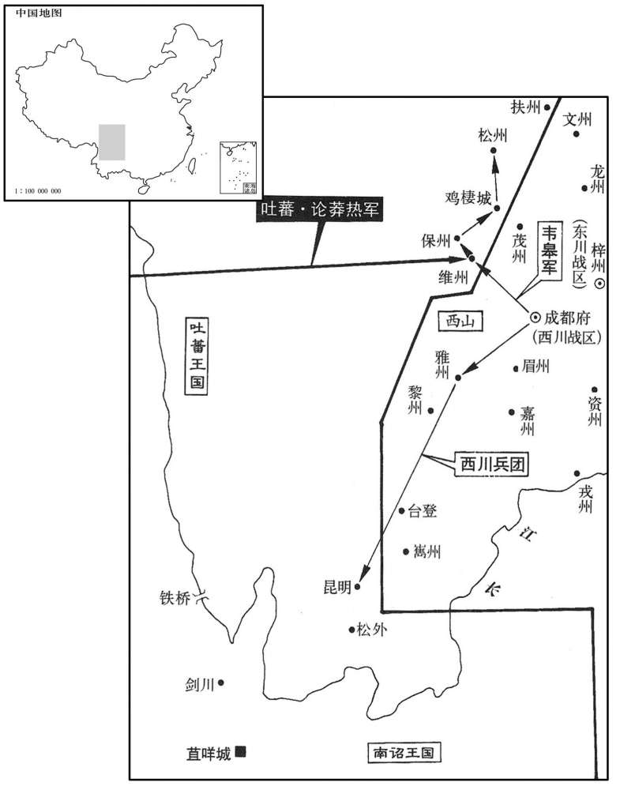

公元801年资治通鉴：本年记事、原文与白话对照
按原书编年位置阅读；追叙和史论不等于本年发生的事件。白话采用所据译本，缺译不以生成译文补齐。
卷236 · 本年记事
公元801年 · 唐德宗神武圣文皇帝贞元十七年
贞元十七年〔（辛巳、八○一）〕
本年事件索引（现代整理）
- 韩全义到长安后拒绝朝见，窦文场替其掩饰败绩
- 韦士宗在黔州滥杀官吏，逃亡后裴佶任观察使
- 日食
- 杨朝晟在宁州防秋期间去世
- 李朝寀请求将戍守定平的部众归属神策军
- 杨朝晟病重时推荐刘南金暂知邠宁军务
- 德宗派薛盈珍赴宁州探查军情并宣读诏令
- 军士杀害刘南金，拒绝李朝寀接掌邠宁
- 德宗撤回李朝寀任命，改命高固知邠宁军事
- 孟子周严防军变，避免邠州军队骚乱
- 李锜借进奉讨好朝廷，私刑处死告发者崔善贞
- 高固任邠宁节度使，宽厚治军安定军府
- 吐蕃侵犯盐州
- 王士真任成德节度使
- 吐蕃攻陷麟州，杀刺史郭锋后掠走百姓
- 吐蕃将领徐舍人释放僧人延素，透露其祖先为唐将
- 德宗命韦皋深入吐蕃境内出兵分其兵势
- 郑儋暴卒，令狐楚在军中草拟遗表
- 韦皋在雅州大败吐蕃
- 窦文场致仕，杨志廉接任左神策中尉
- 韦皋多次击败吐蕃，攻围维州、昆明城
- 盐州刺史杜彦先弃城逃往庆州

本年形势与背景参考图
春，正月，甲寅，韩全义至长安，窦文场为掩其败迹；〔为，于伪翻；下同。〕上礼遇甚厚。全义称足疾，不任朝谒，〔任，音壬。朝，直遥翻。考异曰：旧全义传云：「令中使就第赐宴，自还至辞，都不谒见而去。议者以隳败法制，从古以还，未如贞元之甚。」按实录：「壬戍，宴全义于麟德殿。」又云：「自还及归，不见不辞于正朝。」盖非不谒也，但不于正朝耳。〕遣司马崔放入对。放为全义引咎，谢无功，〔为，于伪翻。〕上曰：「全义为招讨使，能招来少诚，其功大矣，何必杀人然后为功邪！」〔德宗之耳目为宦官所聋瞽率类此。〕闰月，甲戍，归夏州。〔夏，户雅翻。〕
春季，正月，甲寅（二十一日），韩全义来到长安，窦文场替他遮掩军队溃败的行迹，德宗以非常隆重的礼仪厚待他。韩全义声称得了脚病，不能上朝谒见，派遣司马崔放入朝回答德宗的提问。崔放替韩全义承认过失，以没有取得成效而谢罪。德宗说：“韩全义担任招讨使，能够将吴少诚招来，这个功劳就够大的了，为什么一定要将人们杀死，然后才算是功劳呢？”闰正月，甲戌（十一日），韩全义回夏州去了。
韦士宗既入黔州，〔去年士宗复入黔州，事见上卷。黔，渠今翻，又其廉翻。〕妄杀长吏，人心大扰。士宗惧，三月，脱身亡走。夏，四月，辛亥，以右谏议大夫裴佶为黔州观察使。〔佶，其吉翻。〕
韦士宗进入黔州以后，胡乱杀害高级官员，人心大为混乱。韦士宗害怕了，三月，他脱出身来，逃亡而去。夏季，四月，辛亥（二十日）。德宗任命右谏议大夫裴佶为黔州观察使。
五月，壬戍朔，日有食之。
两版字句有差异，建议核对原文。
五月，壬戌朔（初一），出现日食。
朔方邠、宁、庆节度使杨朝晟〔朔方兵分居邠，故仍以朔方军号冠之，其实只节度邠、宁、庆三州。〕防秋于宁州，乙酉，薨。
朔方、宁、庆节度使杨朝晟在宁州防御吐藩。乙酉（二十四日），杨朝晟去世。
初，浑瑊遣兵马使李朝寀将兵戍定平。〔武德二年分宁州定安县置定平县，仍属宁州。九域志：在州南六十里。朝，直遥翻。寀，仓宰翻。将，即亮翻。〕瑊薨，朝寀请以其众隶神策军；诏许之。
当初，浑派遣兵马使李朝领兵戍守定平。浑去世以后，李朝请示将他的部众隶属于神策军，德宗颁诏答应了他的请求。
杨朝晟疾亟，〔亟，泛力翻。〕召僚佐谓曰：「朝晟必不起，方命帅多自本军，虽徇众情，殊非国体。〔帅，所类翻；下同。〕宁州刺吏刘南金，练习军旅，宜使摄行军，且知军事，比朝廷择帅，〔比，必利翻，及也。〕必无虞矣。」又以手书授监军刘英倩，英倩以闻。军士私议曰：「朝廷命帅，吾纳之，即命刘君，吾事之；若命帅于他军，彼必以其麾下来，吾属被斥矣，必拒之。」
杨朝晟病情加剧，便召集僚属对他们说：“我肯定不行了，对朔方军主帅的任命，人选往往出自本军，虽是顺从大家的意愿，但实在不符合国家的体统。宁州刺史刘南金熟悉军事，最好让他代理行军司马，暂且让他掌管军中事务，及至朝廷选任节帅时，就肯定没有忧虑了。”杨朝晟又把亲笔书信交给监军刘英倩，刘英倩又上报朝廷闻知。将士们私下议论说：“朝廷任命主帅，我们是接纳的，即便是任命刘君，我们也是侍奉他的。倘若从别的军队中任命主帅，那位主帅肯定要把他的部下带过来，我们这一班人就会遭受排斥了，所以我们一定要抵制此事。”
己丑，上遣中使往察军情，军中多与南金。辛卯，上复遣高品薛盈珍赍诏诣宁州。〔唐内侍省有高品一千九百六十六人。复，扶又翻。〕六月，甲午，盈珍至军，宣诏曰：「朝寀所将本朔方军，今将并之，以壮军势，威戎狄，以李朝寀为使，南金副之，军中以为何如﹖」诸将皆奉诏。
己丑（二十八日），德宗派遣中使前往朔方察看军中的情势，军中将士多数亲附刘南金。辛卯（三十日），德宗再次派遣高品薛盈珍携带诏书前往宁州。六月，甲午（初三），薛盈珍来到军中，宣布诏旨说：“李朝率领的军队本来属于朔方军，现在准备将此军与你们合并，以便壮大军队的声势，威慑异族之人，任命李朝为节度使，让刘南金任他的副职，军中将士认为怎么样呢？”各将领都接受了诏命。
丙申，都虞候史经言于众曰：「李公命收弓刀而送甲冑二千。」军士皆曰：「李公欲内麾下二千为腹心，吾辈妻子其可保乎！」夜，造刘南金，〔造，七到翻。〕欲奉以为帅，南金曰：「节度使固我所欲，然非天子之命则不可；军中岂无他将乎！」〔将，即亮翻。〕众曰：「弓刀皆为官所收，惟军事府尚有甲兵，〔军事府，知军事所居也。〕欲因以集事。」南金曰：「诸君不愿朝寀为帅，宜以情告敕使。若操甲兵，〔操，七刀翻。〕乃拒诏也。」命闭门不内。军士去，诣兵马使高固，固逃匿；搜得之，固曰：「诸君能用吾言则可。」众曰：「惟命。」固曰：「毋杀人，毋掠金帛。」众曰：「诺。」乃共诣监军，请奏之。众曰：「刘君既得朝旨为副帅，必挠吾事。」〔挠，奴巧翻。〕诈称监军命，召计事，至而杀之。
丙申（初五），都虞候史经对大家说：“李公命令收缴弓箭刀剑，并且送去两千套盔甲。”将士们都说：“李公打算收纳自己的部下两千人，作为亲信，我们的妻子儿女还能得到保全吗？”夜间，大家来到刘南金处，打算拥戴他出任主帅，刘南金说：“出任节度使，固然是我所愿意的。然而，如果不是由天子任命的，那就不合适了。难道军队中就没有别的将领可以拥戴了吗？”大家说：“弓箭刀剑全被长官收缴去了，只有军事府还储藏着铠甲兵器，我们打算凭着军事府的武器聚众起事。”刘南金说：“如果诸位不愿意让李朝担任主帅，最好将其中的情由告诉圣上的使者。假如动起武来，就是抗拒诏命了。”于是刘南金让人关了门，不让众人进去。将士们离开以后，又到兵马使高固那里去，高固逃避开来，但将士们还是将他搜寻到了。高固说：“如果诸位能够按我说的去做，我就答应你们的要求。”大家说：“唯命是听。”高固说：“不得杀人，不得掳掠钱财布帛。”大家说：“是。”于是，高固与大家一起到监军那里，请监军奏报大家的要求。大家说：“既然刘君得到朝廷的旨意，出任副主帅，他肯定要阻挠我们的事情。”大家假意声称监军下达命令，传召他计议事情，刘南金一到，大家便将他杀了。
戊戍，制以李朝寀为邠宁节度使。是日，宁州告变者至，上追还制书，复遣薛盈珍往诇军情。〔复，扶又翻；下同。诇，火迥翻，又翾正翻。〕壬寅，至军，军中以高固为请，盈珍即以上旨命固知军事。
戊戌（初七），德宗颁发制书任命李朝为、宁节度使。就在这一天，报告宁州变乱的人来到朝廷，德宗将制书追回，再次派遣薛盈珍前去刺探军中的情势。壬寅（十一日），薛盈珍来到军中，军中将士请求任命高固，薛盈珍当即以德宗的旨意命令高固掌管军中事务。
或传戊戍制书至邠州，邠军惑，不知所从，〔薛盈珍已命高固知宁州军事，而又有传李朝寀制书至邠者，故留邠之军惑而不知所商从。〕奸人乘之，且为变。留后孟子周悉内精甲于府廷，日飨士卒，内以悦众心，外以威奸党。邠军无变，子周之谋也。
有人将戊戌日颁布的制书传到州，州军惶惑犹疑，不知道应当听从哪一个诏命，邪恶之徒利用这一时机，将要发起变乱。留后孟子周将精锐甲兵全部安置到官署的庭院中，每天大宴将士，对内是要博得大家的欢心，对外是威慑乱法犯禁的那一伙人。州军队没有发生变乱，就是由于有孟子周从中谋划的原故。
李锜既执天下利权，〔十五年李锜为诸道盐铁转运使，事见上卷。〕以贡献固主恩，以馈遗结权贵，〔遗，唯季翻。〕恃此骄纵，无所忌惮，盗取县官则，所部官属无罪受戮者相继。浙西布衣崔善贞诣阙上封事，言宫市、进奉及盐铁之弊，因言锜不法事。上览之，不悦，命械送锜。锜闻其将至，先凿坑于道旁；己亥，善贞至，并锁械内坑中，生瘗之。〔瘗，于计翻。〕远近闻之，不寒而栗。锜复欲为自全计，增广兵众，选有材力善射者谓之挽强，〔言其力能挽强弓也。杜甫诗：「挽弓当挽强。」〕胡、奚杂类谓之蕃落，〔胡、奚之俘配隶江南者，锜收养之。〕给赐十倍他卒。转运判官卢坦屡谏不悛，〔悛，肚缘翻。〕与幕僚李约等皆去之。约，勉之子也。〔李勉历事肃、代、德三朝，贞元中为相。〕
李执掌全国的财政大权后，通过进献贡物来巩固主上的恩宠，通过赠送财物来结纳地位高、有权势的人、依仗着这一点而骄横放纵，没有一点顾忌与畏惧，非法盗占国库的财物，他统领的属吏中无罪而遭到杀害的人相继不断。浙西平民崔善贞前往朝廷进献秘密奏章，谈论宫市、进献贡物以及经营盐铁的弊病，因而讲到李不守法纪的事情。德宗看了他的奏章，很不高兴，命令将他用枷锁拘禁着送交李。李听说他就要到来，事先在道路旁边挖了一个土坑。己亥（初八），崔善贞到了，李将他连同枷锁一起推进坑中，活埋了他。远近各地的人们听说此事后，都不寒而。李又作了些想要自我保全的安排：增加士兵的人数，选拔多才强力、善于射箭的人，将他们称作“挽强”；对所收容的胡、奚等各族人，将他们称作“蕃落”，对他们的供给与赏赐，是其他士兵的十倍。转运判官卢坦屡次劝谏，他都不肯悔改，于是卢坦与幕僚李约等人都离开了他。李约是李勉的儿子。
己酉，以高固为邠宁节度使。固，宿将，以宽厚得众，节度使忌之，置于散地，〔散，悉但翻。〕同列多轻侮之；及起为帅，一无所报复，〔【章：十二行本「复有「由是」二字；乙十一行本同。】〕军中遂安。
己酉（十八日），德宗任命高固为宁节度使。高固是一员老将，因待人宽和仁厚而得到大家的拥护，过去的节度使妒忌他，给他安排了一个闲散的职务，同事们大多轻视侮辱他。及至被起用为主帅，高固没有对任何一人实行报复，于是军中将士安定下来。
秋，七月，戊寅，吐蕃寇盐州。
秋季，七月，戊寅（十八日），吐潘侵犯盐州。
辛巳，以成德节度副使王士真为节度使。
辛巳（二十一日），德宗任命成德节度副使王士真为节度使。
己丑，吐蕃陷麟州，杀刺史郭锋，夷其城郭，掠居人及党项部落而去。锋，曜之之子也。〔曜，郭子仪之子也。〕
己丑（二十九日），吐蕃攻陷麟州，杀死刺史郭锋，铲平了麟州城廓，对当地居民以及党项部落掳掠了一番，便离去了。郭锋是郭曜的儿子。
僧延素为虏所得。虏将有徐舍人者，谓延素曰：「我英公五代孙也。〔李绩，封英国公。〕武后时，吾高祖建义不成，〔谓敬业也。事见二百二卷武后光宅元年。〕子孙流播异域，虽代居禄位典兵，然思本之心不忘，顾宗族大，无由自拔。今听汝归。」遂纵之。
僧人延素被吐蕃俘获后，有个叫做徐舍人的吐蕃将领对延素说：“我是英国公李的五世玄孙。在武后时期，我的高祖徐敬业树立义旗，没有成功，子孙后代流亡迁徒到异国他乡。虽然我家世代身居官位，掌管军事，然而怀念故土之心难以忘却，只是照顾到我的宗族人口众多，没有机会自己解脱出来罢了。现在，我准许你回国。”于是徐舍人放走了延素。
上遣使敕韦皋出兵深入吐蕃以分其势，纾北边患。〔纾，缓也。〕皋遣将将兵二万分出九道，攻吐蕃维、保、松州及栖鸡、老翁城。〔宋白曰：保州本维州之定廉县，南接吐蕃，为夷落之极塞。开元二十八年，羌夷内附，置奉州。天宝改云山郡，八载，移治天保军，改为天保郡，寻没，干元元年复归附，乃改为保州。按王涯传曰：绵州威蕃栅西抵栖鸡城。盖在茂州界。〕
德宗派遣使者敕令韦皋派兵深入到吐蕃疆域中去，以便分散他们的势力，缓解北部边疆的战祸。韦皋派遣将领率兵两万人分别由九条路线进发攻打吐蕃的维州、保州和松州以及栖鸡和老翁城。
河东节度使郑缰暴薨，不及命后事，军中喧哗，将有他变。中夜，十余骑执兵召掌书记令狐楚至军门，诸将环之，〔环，音宦。〕使草遗表。楚在白刃之中，操笔立成。楚，德棻之族也。〔令狐德棻事太宗，疑「族」字下有「孙」及「曾、玄」等字。棻，抚文翻。〕八月，戊午，以河东行军司马严绶为节度使。
河东节度使郑儋突然去世，来不及安排后事，军中将士噪杂地大声喊叫，将要发生异常的变故。半夜时分，十多个人骑着马，握着兵器，将掌书记令狐楚召到军营门口，各将领围绕着他，让他起草郑儋的临终表章。在明晃晃的兵器中间，令狐楚拿起笔来，一会儿就写成了。令狐楚是令孤德的同族后人。八月，戊午（二十八日），德宗任命河东行军司马严绶为节度使。
九月，韦皋奏大破吐蕃于雅州。〔宋白曰：雅州，即秦严道县地，后魏立蒙山郡，唐立雅州。按郡国志，汉源县有离山倻，蜀守李冰所凿。离，即古雅字也，州以此为名。旧志：雅州，京师西南二千七百二十三里。〕
九月，韦皋奏称在雅州大破吐蕃。
左神策中尉窦文场致仕，以副使杨志廉代之。
左神策中尉窦文场辞官归居，德宗让左神策中尉副使杨志廉替代他的职务。
韦皋屡破吐蕃，转战千里，凡拔城七，军镇五，焚堡百五十，斩首万余级，捕虏六千，降户三千，遂围维州及昆明城。冬，十月，庚子，加皋检校司徒兼中书令，赐爵南康郡王。南诏王异牟寻虏获尤多，上遣中使慰抚之。
韦皋屡次打败吐蕃，转战千里，共计攻克城池七座，军镇五个，焚烧堡垒一百五十个，斩首一万多，捉住吐蕃六千人，招降人口三千户，并包围了维州以及昆明城。冬季，十月，庚子（十一日），德宗加封韦皋检校司徒兼中书令，赐爵为南康郡王。南诏王异牟寻俘获掳掠尤其繁多，德宗派遣中使慰问安抚他。
戊午，盐州刺史杜彦先弃城奔庆州。〔为吐蕃所逼也。盐州修筑距是年纔八年。〕
戊午（二十九日），盐州刺史杜彦先放弃州城，逃奔庆州。
译本中未与胡注本可靠对应的内容
以下另列供核对版本差异，不并入胡注本正文。
译本所附古文
[7]丁巳，成德节度使王武俊薨。
译本白话
丁巳（二十六日），成德节度使王武俊去世。